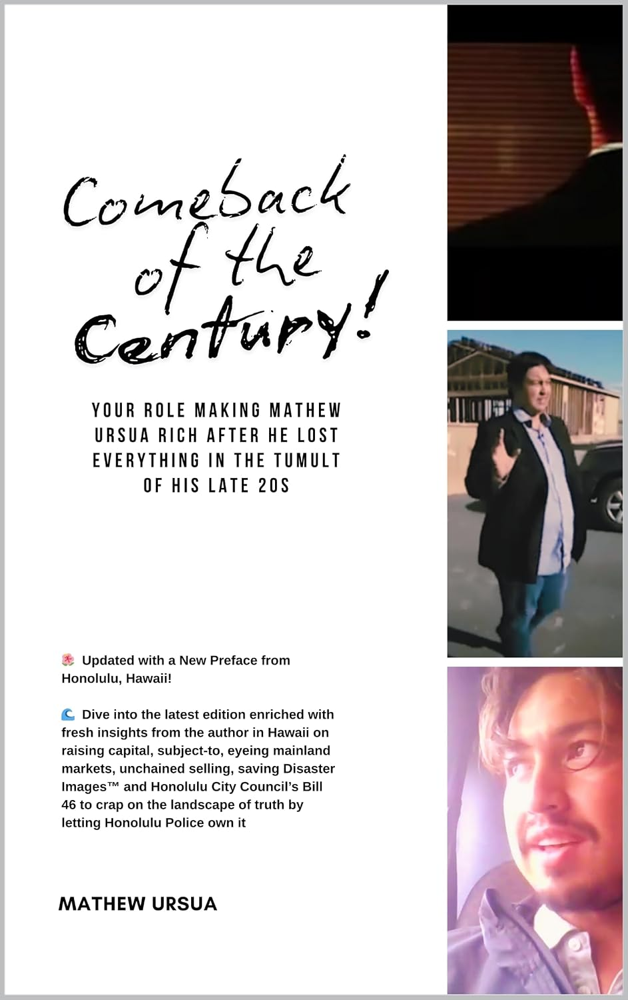

From the Police Scanner to the Property Deed, the Psychiatric Record, and the Public Ambulance
By Mathew Ursua
The Window Is Closing
There is a new kind of gate going up in America.
It does not look like the gates outside a private estate. It does not look like the entrance to a gated community, a country club, or the executive offices of a real-estate investment firm.
It is made of information.
More precisely, it is made of the information that some people can obtain and other people cannot.
I began thinking about this problem while photographing police officers, firefighters, and paramedics in Honolulu.
I was trying to do something that had become a familiar part of the news business in Los Angeles: independent, first-responder stringer photography. You listen to the scanner. You find out where something is happening. You go there with your camera. You document the event. And you make your photographs available to the people reporting the news.
Not every photograph becomes news.
But you cannot photograph the event if you do not know where it is happening.
And you cannot independently investigate what happened if the people whose actions you are investigating are the only people permitted to tell you about it.
That is why police radio encryption matters.
When a municipality encrypts its ordinary public-safety communications, it does considerably more than modernize a radio system. It can change the relationship between independent journalists and the institutions they cover.
The independent photographer loses an opportunity to learn about an incident firsthand. The public becomes more dependent upon official press releases. The established newsroom may retain a privileged relationship with the public-information officer, while the person without those relationships is left outside.
I believed that was wrong in Honolulu.
I believed it was wrong in Las Vegas.
And I believe it deserves continued opposition everywhere that public-safety agencies adopt unnecessary blanket encryption.
But there is another danger.
We cannot allow the fight against police and fire radio encryption to distract us from the larger struggles over information that are unfolding around it.
I made that argument in my October 28, 2025 essay, The Window Is Closing on Data That Builds Dynasties.
At the time, I was looking beyond the police scanner to property ownership records, business information, the economic advantages of knowing who owns what, and the social consequences of letting the government decide which information ordinary people should be permitted to examine.
The more I investigated, the more I came to understand that these were not separate problems.
They were manifestations of the same problem.
The existence of information does not mean the existence of an opportunity to use it.
And when information becomes expensive, restricted, fragmented, or available only to those with official credentials, the people with the least money are often the ones who lose the most.
I want to expand that argument.
Because the next frontiers of social justice are not limited to what happens on a police radio.
They concern what we are allowed to know about the ownership of land, the abilities of human beings, the decisions made by medical authorities, and the information our government accumulates about us.
These are the battles I want to fight together.
FRONTIER I
THE RIGHT TO KNOW WHO OWNS THE LAND
Thirteen Million Properties—and an Information Barrier
California has more than thirteen million land parcels.
Think about that number.
Thirteen million separate pieces of real property. Houses. Condominiums. Apartment buildings. Commercial buildings. Industrial properties. Vacant lots. Development sites. Agricultural land.
Each parcel has a history.
Somebody acquired an interest in it. Somebody financed it. Somebody may have borrowed against it, transferred it into a trust, conveyed it to a corporation, inherited it, or assembled it with other properties for development.
Somewhere in the public record are documents that explain a considerable portion of that history.
But I want to know something more immediate.
Who owns it now?
Not merely its address.
Not merely its assessor's parcel number.
Not merely its shape on a map.
Who is the owner of record? Where is the tax bill mailed? Is the owner an individual, a trust, a partnership, or a corporation? What other publicly recorded properties are associated with that entity?
These are not obscure questions.
They are fundamental to understanding how wealth is distributed, how real estate is assembled, and how the people who already own property are positioned to acquire still more of it.
Yet attempting to reconstruct that information across California can require navigating fifty-eight different county systems, obtaining records through different methods, paying different fees, and turning to commercial vendors to accomplish something that ought to be straightforward.
I know what the commercial alternatives can cost.
More than $200 a month for some of the subscriptions and services I have considered.
And considerably more for advanced data products.
Perhaps that is nothing to an established investor.
Perhaps it is nothing to an institutional real-estate firm buying apartment complexes with borrowed money.
But to somebody who has almost no capital, that amount of money can represent an enormous barrier.
The irony is that the underlying information may already be maintained by public institutions.
We have paid to create it.
We have paid to maintain it.
And then we may have to pay a private company hundreds of dollars a month to organize and deliver it to us.
Public in Law. Public in Practice.
California does have a publicly accessible statewide parcel REST service.
That is worth acknowledging.
The April 2026 statewide public parcel layer published through California's State Water Resources Control Board provides parcel identifiers, geographic information, and site-address fields.
But the available layer does not include the owner-name and tax-billing mailing-address fields that would make it the kind of statewide ownership resource I am seeking.
That distinction is the heart of the problem.
A statewide map of parcels is not the same thing as a statewide database of who owns them.
And a document that can be inspected at a county office is not necessarily information that a person without transportation, money, or professional assistance can effectively use.
I want a different standard.
IF INFORMATION IS LEGALLY PUBLIC, IT SHOULD BE AVAILABLE ON A PUBLIC WEBSITE.
And if government maintains millions of records in a database, those records should be accessible through practical, documented, machine-readable interfaces.
JSON. REST APIs. Downloadable tables. Public search tools.
Not just an expensive data subscription.
Not just an appointment to inspect a record during county office hours.
Not just a PDF that must be manually copied into a spreadsheet before an independent researcher can begin doing the work.
I want a public interface that makes ownership research possible at scale.
Owner names where the public record discloses them.
Tax-billing mailing addresses where legally available.
Recorded ownership interests.
Assessor identifiers.
Links to recorded instruments.
Corporate and business entity information that can be lawfully linked to a parcel.
The ability to download, compare, and study the records without first obtaining the purchasing power of a large company.
A commercial vendor may add privately sourced telephone numbers, marketing profiles, or contact data that government does not possess or disclose. I am not confusing those commercial additions with county assessor records.
I am talking about the fundamental public ownership information that should be useful before a private data broker adds anything to it.
Public information should not become a luxury product merely because the public wants to use it efficiently.
What Honolulu Taught Me
I learned to appreciate the possibilities of open government data through my work and research in Honolulu.
There, property information has been made available through online systems and machine-readable datasets that permit a degree of investigation far beyond looking up one address at a time.
You can begin with a parcel.
You can follow the ownership information.
You can explore tax records, geographic relationships, and the larger structure of the city.
You can write software to assemble and analyze information instead of spending your life manually copying it.
That is an extraordinary civic resource.
And it should not belong only to professional data scientists or people whose employers are paying for sophisticated commercial software.
A high school student ought to be able to do it.
A journalism student ought to be able to do it.
A person thinking about becoming a real-estate developer ought to be able to do it.
Someone trying to understand how his neighborhood has changed over fifty years ought to be able to do it.
I have argued that we should not let the encryption of police radio systems distract us from the potential disappearance of this kind of visibility.
I still believe that.
The police scanner tells us what is happening on the street. Property records tell us who owns the street.
Both are essential to understanding the world.
Why I Want to Know the Owners
My interest in these records is personal.
I want to own real estate.
And I want to help build things.
After everything I believe I lost during the years described in my memoir, Comeback of the Century, I want a means of rebuilding my life that does not leave me permanently dependent upon hourly wages, charity, or other people deciding what level of economic ambition is appropriate for someone in my circumstances.
I want capital.
I want equity.
I want income-producing property.
I want to Take Title℠.
That ambition has two distinct possibilities.
The first is a voluntary contribution of property or an ownership interest.
I want people who read my story, understand my circumstances, and have the resources to help to consider doing something extraordinary.
Perhaps somebody has a property that could be contributed outright.
Perhaps somebody could make a substantial gift of equity.
Perhaps somebody would consider a transaction that creates the foundation for my future ownership, with proper documentation, due diligence, and legal advice.
The second possibility is participation in real-estate development.
That is a different undertaking.
Somebody with substantial wealth may already own property, finance developments, or work with builders, architects, engineers, and property managers.
I want to meet those people.
I want to learn from them.
And I want the possibility of participating in projects in which my contribution—research, development work, management, marketing, or other agreed responsibilities—can be compensated through an actual ownership interest.
Because that is how wealth can become something more substantial than the next paycheck.
Consider an apartment building.
If its net operating income can be increased through appropriate improvements, higher occupancy, better operations, or a legitimate redevelopment opportunity, that additional income may increase the property's value.
Now consider a new development.
The land is acquired. The project is designed. Construction is financed. Buildings rise. Space is leased. Income is created.
That is capital being put to work.
I want to participate in those processes.
I want to learn the mathematics of acquisition cost, leverage, capitalization rates, development expenses, debt service, and risk.
And I want to negotiate a stake in the value that gets created.
Not every project makes money. Not every prospective partner will be interested. And no one is obligated to transfer an asset or offer me an interest.
But I want access to the information and relationships necessary to discover whether those opportunities exist.
I do not want to spend my life merely admiring the property that other people own.
I want a chance to become an owner myself.
California, Germany, and the Economics of Getting In
There is another comparison I want to make, and it is deliberately provocative.
California and Germany.
No, they are not identical economies.
No, they do not have identical legal systems, tax structures, or real-estate markets.
But the analogy I am interested in concerns the difficulty of buying into a mature, expensive economic system when you have very little capital.
Imagine trying to acquire an income-producing building.
The purchase price is enormous.
The financing is expensive.
Maintenance and improvements require more capital.
And when you finally calculate the property's net operating income relative to its acquisition price, the return may not justify what you had to pay.
That is a terrible problem for somebody trying to get started.
It is one thing for a wealthy family to accept a relatively low yield on an expensive property because it owns substantial assets already.
It is another thing for an ambitious newcomer to invest nearly everything he has in an asset that cannot generate enough income to build the next stage of his life.
And so I look at California and Germany and see a question worth investigating.
Can high property prices, established patterns of ownership, regulation, and the structure of mature economies make it harder for a person without inherited capital to achieve a transformative return?
I also want to examine the relationship between inequality and opportunity.
I know that inequality creates injustices.
But it is also true that extraordinary concentrations of wealth create extraordinary concentrations of capital. They create large estates, private development companies, investment partnerships, and individuals who may be capable of financing projects or transferring assets on a scale most people cannot imagine.
It would be simplistic to say that less inequality automatically means lower investment returns. The economics are more complicated.
But I am interested in whether the opportunities to break into large pools of private capital differ between places like California, Germany, Nevada, and other markets.
And I refuse the argument that my answer must simply be to move somewhere else.
Don't tell me to go to Germany.
Don't tell me to go to California as though being in California automatically solves the problem.
Don't tell me to accept a particular economic class as my permanent place in the world.
I want to understand what makes capitalism financially rewarding, who is positioned to profit from it, and how someone excluded from the established ownership structure can break into it.
That is why the records matter.
Because you cannot investigate an economic landscape that you cannot see.
FRONTIER II
INTELLIGENCE, PSYCHIATRY, AND THE HUMAN BEING WHO MIGHT HAVE BEEN
The Books I Was Reading
When I was studying English at the University of Hawaiʻi at Mānoa, I had intellectual interests that went considerably beyond the reading assignments in my classes.
One of them was human intelligence.
IQ.
Cognitive ability.
The science of human differences and the extraordinary ethical arguments that have followed attempts to measure them.
I became fascinated with the literature surrounding Charles Murray, Richard Herrnstein, Arthur Jensen, and their critics.
The Bell Curve.
The Bell Curve Wars.
Stephen Jay Gould's The Mismeasure of Man.
David Hawkins's The Science and Ethics of Equality.
These were books I wanted to explore because they raised questions about the nature of human ability, how societies distribute opportunity, and what happens when people start using measurements of intelligence to determine what an individual is worth.
I was not reading them merely because somebody had assigned them.
I wanted to know.
I wanted to understand why some people seemed capable of doing extraordinary things, why other people struggled, and whether the apparent differences between them were fixed or could be changed through education, training, environment, or opportunity.
I was interested in Arthur Jensen's work on intelligence.
I was interested in the controversies surrounding Herrnstein and Murray.
And I was interested in the scientists and scholars who challenged their methods, assumptions, and policy conclusions.
These writers did not all agree. Their books belong to an ongoing intellectual dispute, not a single coherent scientific curriculum. Some of the claims made in that debate—particularly claims about race and intelligence—have been sharply criticized and should not be treated as settled conclusions.
But I wanted to read the arguments.
All of them.
The attraction was intellectual, philosophical, and deeply personal.
I was fascinated by ability itself.
The athlete. The mathematician. The exceptionally articulate woman. The person who had learned several languages. The student who seemed to move effortlessly between classrooms, sports, travel, and the social world.
My grandfather would sometimes take me to University of Hawaiʻi games. I remember the women's volleyball program and the Stan Sheriff Center.
There was something about that environment.
Athleticism. Youth. Talent. Education. Beauty. Competition.
People developing extraordinary abilities and displaying them before thousands of spectators.
I was attracted to those qualities in women, and I wanted to live in a world where I could develop my own abilities and meet people whose accomplishments I admired.
University was not merely about the eventual degree.
It was about the human beings I might become capable of knowing.
And the human being I might become.
The Danger of Turning Ability into Destiny
But the literature of intelligence has another history.
Eugenics.
The attempt to use claims about heredity, ability, disability, and human worth to determine who ought to reproduce and who should not.
That history is not theoretical.
California itself carried out thousands of forced sterilizations under eugenics policies during the twentieth century.
Medical and governmental institutions exercised power over people who were classified as unfit, mentally deficient, disabled, or otherwise undesirable.
Scientific terminology became a means of authorizing decisions that deprived individuals of some of the most fundamental freedoms in human life.
The freedom to choose whether to become parents.
The freedom to control their own bodies.
The freedom to live without an institution declaring that their existence represented a biological problem to be corrected.
I reject that use of government power.
The government's job is not to improve the population by deciding which citizens have the desirable intelligence, genetic characteristics, or social standing to reproduce.
It is not the government's job to decide that some people should be educated only to a certain level.
It is not the government's job to determine that a young man's ambitions exceed the capacities assigned to him by a diagnosis.
And it is not the government's job to dictate the kinds of relationships he should pursue.
Human intelligence is a legitimate subject of scientific study. Human dignity is not something to be awarded according to a test score.
What Psychiatry Did to My Life
This issue is inseparable from my own history.
I have written extensively about my experiences with psychiatric treatment.
I was a boy when professional diagnoses and psychiatric medications entered my life.
I was prescribed medications during the years when I was developing physically, intellectually, socially, and sexually.
In Comeback of the Century, I describe what I remember of those years and why I came to believe that psychiatric treatment changed the trajectory of my life.
I believe I lost energy.
I believe I lost opportunities to develop myself.
I believe the treatments I received interfered with the kind of urgency, assertiveness, physical activity, social confidence, and ambition that I wanted to cultivate.
And I have spent years asking what my life might have been if things had happened differently.
I cannot turn memory into a controlled scientific experiment. Establishing whether a particular medication caused a particular long-term effect requires medical evidence, and not every hardship in my life can be attributed to one treatment.
But that does not make the questions unimportant.
It makes the questions worthy of investigation.
I want to know what I was given.
Why it was prescribed.
What adverse effects were considered.
What happened to my body.
What happened to my mind.
What alternatives were available.
And how the decisions of professionals influenced the opportunities that remained available to me.
There is something extraordinary about the authority that psychiatric institutions can acquire over a young person.
A boy becomes anxious.
A boy becomes angry.
A boy struggles socially.
A boy behaves in ways adults consider inappropriate or disruptive.
And suddenly other people may begin deciding what kind of brain he has, what treatment he needs, and what constitutes an acceptable level of functioning.
But what if his anger is partly a response to real disadvantages?
What if his distress is connected to poverty, exclusion, humiliation, loneliness, or a lack of educational opportunity?
What if he is dissatisfied not because his ambitions are pathological, but because his circumstances are genuinely intolerable to him?
What if he wants to become stronger, more educated, more attractive, more socially capable, and more economically independent?
What if he wants a different life?
Should treatment be evaluated only according to whether it makes the person easier to manage?
Or should it also be evaluated according to the future that person wants to build?
These are among the questions at the heart of my opposition to the psychiatric authority I experienced.
The Years the Locust Ate
I once weighed more than four hundred pounds.
Later, I lost more than two hundred pounds.
I began walking enormous distances, exercising, and experiencing my body in ways that had seemed impossible during years of severe obesity.
But physical transformation did not automatically produce economic transformation.
I could walk across a city.
I could climb stairs.
I could exercise.
I could imagine the possibility of dating, traveling, working independently, or starting an enterprise.
And still not have a home.
Still not have the capital to invest in real estate.
Still not have the resources to pursue the education I wanted.
Still not have the legal and financial support I believed necessary to challenge what had happened to me.
That is the cruelest part of the story.
You can change the body.
But you cannot go back and recover the adolescence that has already passed.
You cannot return to the classroom you left.
You cannot recreate the friendships you never made, the journeys you never took, or the relationships that never began.
I have often thought about the biblical promise of restoring the years the locust has eaten.
I want those years back.
And because time cannot literally be restored, I have become intensely interested in the things that can change the economic circumstances of the years I have left.
Property.
Capital.
Ownership.
The ability to travel.
The ability to study.
The freedom to create a life that is not defined entirely by what I believe happened to me in the past.
That is why the argument for public property data and the argument for psychiatric autonomy belong on the same page.
One concerns the opportunities that are available in the world.
The other concerns what happens when an institution influences a person's capacity to pursue them.
Both involve power.
Both involve information.
And both involve the question of who gets to decide what somebody else's future should look like.
Read Comeback of the Century

My memoir is an extended account of this struggle.
Comeback of the Century examines my experiences with psychiatric treatment, educational opportunity, physical transformation, poverty, social ambition, and the attempt to rebuild a life I believe was profoundly altered by decisions made when I was young.
It is not simply a book about medication.
It is a book about the consequences of lost opportunity.
And about the determination to make the rest of a life count.
If you want to understand why I am advocating for real-estate ownership, freedom from institutional overreach, and the economic resources necessary for an extraordinary comeback, I invite you to read it.
Explore Comeback of the Century on MathewUrsua.com
**Purchase *Comeback of the Century***
Paperback ISBN 9798288187216.
FRONTIER III
THE GOVERNMENT SHOULD NOT HOLD THE SECRETS THAT DETERMINE OUR LIVES
From the Public Record to NCIC
Now consider another kind of information.
Criminal records.
Court documents.
Police databases.
Investigative files.
Information about arrests, warrants, convictions, and the history of an individual's encounters with the criminal-justice system.
Some of that information is available through public court records.
Some requires searching separate local and state systems.
Some is held in restricted law-enforcement databases.
The National Crime Information Center—NCIC—is one of the most important examples.
It is a national law-enforcement information system maintained by the FBI, with access and dissemination restricted under established rules.
But I want to challenge the larger philosophy that makes people comfortable with the government possessing information they cannot readily inspect themselves.
Consider the principle.
We accept that the government may know things about our neighbors that we do not know.
We accept that government officials may have access to records that can influence how a person is investigated, treated, classified, or approached.
And then we accept that the government will determine which portions of that information it is willing to disclose.
Why?
If we do not trust our neighbors to see information about us, why should we automatically trust the government to possess it?
That is the question I want to ask.
I am interested in a much more expansive system of public access to criminal-justice records.
Where records document public proceedings or official action, I believe disclosure should be the presumption, with restrictions subjected to serious scrutiny.
I also want people to have the ability to inspect and challenge information held about themselves, including inaccurate or improperly retained records.
This does not mean that an officer is entitled to violate existing database restrictions.
The distinction between lawful public records and restricted investigative information is real.
My argument is that the public should be able to challenge the rules defining that distinction, rather than simply accepting them as the permanent limits of public knowledge.
Joe McGill, Nye County, and the Database Controversy
In 2026, the controversy surrounding Nye County Sheriff Joe McGill brought some of these questions into public view.
The Las Vegas Review-Journal reported on investigations and administrative concerns involving searches of state and federal law-enforcement databases.
The reporting examined allegations of improper searches, the documentation supporting database queries, internal concerns, and restrictions imposed upon the sheriff's access.
McGill defended aspects of his conduct and disputed allegations against him.
There is a great deal to examine in this story.
And I do not want to reduce it to a simplistic declaration that one side is right and the other is wrong.
On November 3, 2026, Nye County held its sheriff's election.
Dan Pineau emerged as the successful challenger and, following the election, was publicly identified as sheriff-elect. McGill conceded the contest.
As of this writing, November 24, 2026, this remains a particularly timely case for examining the power of law-enforcement information systems.
I am not endorsing McGill.
I am not excusing improper access to a restricted database.
And I am not suggesting that an investigation into alleged database misuse is the same thing as an ordinary citizen inspecting a public record.
I am saying that the controversy should lead us to ask larger questions.
Why is the information restricted?
What public purpose does the restriction serve?
Who decides?
Who audits those decisions?
What happens when the people empowered to access a database become the subjects of an investigation themselves?
And how do we establish a system in which government officials cannot hide their own conduct behind the very restrictions they are entrusted to enforce?
Those are questions of limited government.
They are questions of public accountability.
And they belong in a serious discussion of the future of public information.
The President, the Citizen, and the Public Record
The same principles ought to apply regardless of wealth or political status.
A public official should not receive an exemption from scrutiny merely because he is important.
A wealthy businessman should not receive one because he can afford better lawyers.
A president should not receive one simply because he is the president.
That includes Donald Trump.
Where criminal proceedings and related records are public, they should be practically accessible to the public without regard to whether the subject is a political figure, an ordinary citizen, or somebody with the economic resources to make investigation difficult.
And where records are not currently public, I want us to debate whether the restrictions remain justified.
The relevant question is not whether I personally like the person whose name appears in the record.
It is what powers the government should possess, what records it should create, and what the public should be entitled to examine.
The government does not become trustworthy simply because its records are confidential.
Sometimes secrecy protects a legitimate investigation.
Sometimes it shields the institution from embarrassment.
The public ought to have the information necessary to distinguish between those circumstances.
THE SOCIETY THAT DOESN'T NEED MEDICAL SECRECY
I Want to Change the Question
Now we come to the most ambitious part of my argument.
Medical privacy.
And I want to be very clear about what I am advocating.
I am not merely asking whether we can release a few more ambulance dispatch records without violating existing privacy rules.
I am not asking how much transparency can be permitted while preserving the medical-confidentiality system exactly as it exists.
I AM ASKING WHY WE HAVE BUILT A SOCIETY IN WHICH PEOPLE BELIEVE THEIR MEDICAL RECORDS MUST BE KEPT SECRET IN THE FIRST PLACE.
Think about it.
A human being gets sick.
A human being has a medical disorder.
He has a psychiatric history.
He is treated for a sexually transmitted infection.
He has a congenital condition.
He receives emergency treatment after an accident.
He is taken to a hospital by ambulance.
Why should any of those facts become something he is ashamed of?
Why should disclosure threaten his career?
Why should it threaten his ability to rent a home, purchase insurance, attend school, obtain credit, develop friendships, pursue romantic relationships, or participate in economic life?
Why should he have to conceal an important part of his own history to be treated as an equal human being?
If he does, then perhaps the fundamental problem is not that the information might become public.
Perhaps the fundamental problem is the kind of society that makes its disclosure so consequential.
That is the argument I want to make.
And it is considerably more radical than the usual debate about whether a government agency has complied with HIPAA.
Privacy as a Symptom of an Underlying Problem
People often defend medical secrecy by describing what might happen if private information became public.
An employer might discriminate.
An insurer might charge more or refuse coverage.
A landlord might make an unfair decision.
Somebody might be embarrassed.
Somebody might lose an opportunity.
These are serious concerns.
But notice what they have in common.
The medical condition itself is not necessarily the injustice. The adverse treatment of the person because of that condition is the injustice.
So why should the principal answer be to hide the condition?
Why should we organize our entire relationship with medical information around keeping other people from knowing facts about the human body?
Why not confront the consequences directly?
If a diagnosis causes unlawful employment discrimination, strengthen the protections and the remedies.
If somebody is denied housing because of an illness, prohibit that injustice and make the law enforceable.
If health coverage is jeopardized by a person's medical history, change the financing and underwriting rules so that the diagnosis cannot be used to destroy the person's access to care.
If people are embarrassed by ordinary facts of human existence, change the cultural attitudes that make them embarrassing.
And if people are afraid that a psychiatric record will permanently define their intelligence, worth, or capacity for achievement, then challenge the institutions that assign that record such extraordinary authority.
Some protections against disability discrimination and medical underwriting already exist. I want us to examine where those protections remain inadequate and what additional guarantees would be necessary to make medical history economically irrelevant.
I want to develop a society in which information about illness does not operate as a weapon against the person who experienced it.
A society in which a medical history can be fully known without depriving somebody of a livelihood.
A society in which being sick is not a moral failure.
A society in which disability is not proof of inferiority.
A society in which the public record of a person's health does not determine the ceiling of his life.
I DO NOT WANT TO PRESERVE THE SECRECY THAT DISCRIMINATION HAS MADE NECESSARY.
I WANT TO ELIMINATE THE DISCRIMINATION THAT MAKES SECRECY SEEM NECESSARY.
That is the new frontier.
What I Mean by One Hundred Percent Transparency
My ideal goes beyond the disclosure of a limited set of medical statistics.
I am advocating for a fundamental reconsideration of the presumption that medical records should be confidential.
Ultimately, I want a society capable of making comprehensive medical information public without making the individuals described in those records economically vulnerable.
That is the destination.
And it has enormous implications for government emergency services.
Consider the public ambulance.
It is dispatched by a government agency.
It is staffed by personnel performing a public function.
Its operations may be supported by taxpayers and service charges.
It collects information while responding to an emergency.
Its personnel communicate with dispatchers, supervisors, hospitals, and other emergency responders.
Those communications can document what happened to a patient and how the people responsible for helping that patient performed their duties.
Yet much of the information may be withheld because it contains protected health information.
Under present law, qualifying ambulance and EMS providers are subject to HIPAA and other confidentiality requirements. I understand that.
I am proposing a different legal and social arrangement.
I want to examine whether the identities of people transported by public ambulances, the reasons for those transports, the treatment provided, the communications transmitted, and the clinical information collected during an emergency can eventually be made matters of public record.
Not just anonymized statistics.
Not just the number of ambulance runs completed during a month.
The substantive record of the encounter itself.
Yes, this would require major changes to existing law.
Yes, it would require extraordinary safeguards against discrimination, retaliation, and exploitation.
And yes, many people today would object.
But I am not describing what the present legal system permits.
I am describing the society I want us to consider building.
A society in which the fact that you rode in an ambulance does not become a secret that has to be protected in order for you to remain employable, insurable, respected, or free.
That is what I mean by changing the question.
Why the Public Ambulance Matters
I have photographed emergency medical personnel in Honolulu.
I have spent years observing the institutions responsible for police, fire, and ambulance services.
And I have learned that an emergency encounter can involve important questions about what government employees actually did.
Was the response prompt?
Were the appropriate personnel dispatched?
Was the patient treated correctly?
Were procedures followed?
Was information communicated accurately?
Did somebody make a serious mistake?
Was there an injury that could have been prevented?
Was the public given an accurate account of what happened?
Those questions should not be impossible for an independent reporter, researcher, patient, family member, or concerned citizen to investigate.
Records matter.
Radio recordings matter.
Dispatch information matters.
Clinical documentation matters.
The timeline of an emergency matters.
And if the agency that generated those records is also the institution accused of wrongdoing, we should be particularly cautious about granting that agency complete control over the information necessary to investigate it.
I want a future in which public emergency services are subject to exhaustive documentary scrutiny.
I want the public to be able to examine their performance.
I want reporters to be able to reconstruct what happened.
I want data preserved and made available in forms that can actually be analyzed.
And I want to challenge the idea that the entire record of a taxpayer-supported emergency response should be placed beyond public reach because some of the information concerns a medical condition.
If we believe the public ought to trust a government agency to care for people in moments of extreme vulnerability, then the public ought to have meaningful ways to verify that the agency has earned that trust.
This returns us to the police scanner.
What began for me as a struggle for independent access to emergency radio communications becomes a larger question about whether citizens have sufficient access to the documentary record of government action.
I want that record to be far more open.
And I want us to build the protections necessary so that openness does not become a punishment for the person who needed help.
What If You Want Your Medical Records Kept Secret?
I know that many people do.
I know that under the present social and legal arrangements they have serious reasons for wanting confidentiality.
But the purpose of this argument is not to declare those reasons imaginary.
It is to challenge the social conditions that create them.
I want to persuade people that medical secrecy should not have to be the foundation of their security.
I want them to imagine a world in which the truth about their bodies is not an economic liability.
A world in which they can pursue treatment without being made less valuable as employees or citizens.
A world in which a diagnosis does not become a permanent social classification.
A world in which medical disclosure is ordinary rather than scandalous.
And a world in which the state cannot use the pretext of protecting us from embarrassment to accumulate information and exercise powers that the public is never permitted to inspect.
This is an idealistic proposal.
I know it is.
But a social reform movement is not required to treat the limitations of the present system as the permanent boundaries of human possibility.
At one time, many practices we now recognize as unjust were regarded as ordinary components of social life.
The question is whether we are prepared to identify the next injustice.
I believe the fear surrounding medical disclosure points toward one.
Why should society make somebody's medical history so dangerous that he must rely upon secrecy to protect himself?
That is what I want to change.
THE CONNECTION TO EUGENICS
There is a reason this debate brings me back to the literature of intelligence and eugenics.
When governments and institutions classify human beings according to medical conditions, psychiatric diagnoses, cognitive measurements, or judgments about social usefulness, those classifications can acquire enormous consequences.
We know from history that such systems have sometimes been used to justify reproductive control, confinement, segregation, and discrimination.
I do not want the government to decide whose genetic characteristics are worth preserving.
I do not want the government to determine which people should reproduce.
I do not want a psychiatric diagnosis to function as a substitute for a person's right to pursue relationships, education, work, and family life.
And I do not want medicine to become a means of determining what level of ambition is appropriate for a human being.
I have questioned whether aspects of the treatment I experienced had effects that resembled the suppression of opportunity and personal development associated with coercive social-control systems.
That is part of my personal interpretation of my history. It is not an independently established finding that my particular treatment was designed for a eugenic purpose.
But the ethical principle does not depend upon establishing such an intention.
The government should not use medical authority as a mechanism for deciding who deserves a full life.
Neither should private institutions be permitted to use medical classifications as excuses for unjustly excluding people from education, employment, or economic opportunity.
And when an institution makes decisions that profoundly affect an individual's body or future, the individual should have meaningful access to the records, explanations, and evidence necessary to challenge those decisions.
This is where my objections to psychiatric overreach, my interest in human intelligence, and my argument for radical medical transparency come together.
The value of a person should not be determined by the information in a medical file.
And because it should not be determined by that information, I want a society in which the existence of that file no longer gives anybody reason for shame.
LIMITED GOVERNMENT, NOT LIMITED KNOWLEDGE
My Conservative Argument
I consider this a conservative argument.
Not because every conservative would agree with me.
Many would not.
But because I believe government should be limited in its power over the individual.
That means limiting what government is allowed to do with information.
It means subjecting official records and decision-making to public scrutiny.
It means opposing secret systems of classification that can affect an individual's freedom without meaningful accountability.
It means insisting that government institutions work for the people rather than treating the people as subjects to be managed.
And it means refusing to confuse secrecy with safety.
I have long admired the limited-government tradition associated with Ronald Reagan and American conservatism.
But limited government is not simply a slogan about taxes and spending.
It is a question of power.
What should government know?
What should it be permitted to collect?
What decisions should it be allowed to make?
Who can inspect the information on which those decisions are based?
Who gets to challenge an error?
And why should the government be trusted with secrets merely because we are afraid that our neighbors might find out the truth?
The government is not automatically your friend.
The government becomes accountable when its powers are defined, limited, scrutinized, and made answerable to the people.
In some circumstances, that may mean government should never collect certain information at all.
In others, it means information that has already been collected should be available for public inspection.
And where disclosure might expose a person to discrimination, I want us to build a society in which the discrimination is prohibited and effectively remedied—not merely assume that secrecy is the best society can ever offer.
That is my philosophy.
I do not want government to control our lives through information.
I want information to give people greater control over their own lives.
INFORMATION, CAPITAL, AND THE RIGHT TO BECOME SOMEBODY
There is a final relationship between all these issues that I want readers to understand.
Information is not merely something we study.
It is something we use.
A property record may lead to an investment opportunity.
A corporate filing may reveal a relationship between businesses.
A government document may establish that an official acted improperly.
A medical record may help somebody investigate a treatment that changed the course of his life.
An educational book may introduce a student to a discipline he had never been encouraged to study.
A police scanner may alert an independent photographer to an incident that otherwise would have gone undocumented.
These are different kinds of information.
But they share something important.
They can expand the possibilities available to the person who obtains them.
I want those possibilities available to people who do not already have money.
People who cannot afford expensive subscriptions.
People who cannot afford a private investigator.
People who cannot afford a public-relations firm.
People who cannot afford to hire the lawyers and consultants necessary to reconstruct records that government already possesses.
People who grew up without wealthy families to show them the financial and institutional structure of the world.
I have spent years trying to understand that structure.
I studied real-estate records.
I studied human intelligence.
I studied journalism.
I studied the families who own property and the institutions that manage it.
I photographed the government employees whose work most people encounter only when something has gone terribly wrong.
And I wrote about the institutions that I believe profoundly affected my own life.
Now I want to turn those interests into something constructive.
I want to build a more financially independent life through real estate.
I want to continue independent journalism.
I want to write.
I want to study.
I want to investigate.
I want to travel.
And I want the possibility of participating in the kinds of enterprises and relationships that people with inherited wealth may have been encouraged to pursue from childhood.
Not because I am entitled to somebody else's property.
Not because everybody who has succeeded owes me an investment.
But because I want the freedom to make an argument, develop relationships, negotiate opportunities, and build something that changes my economic circumstances.
The public record is one of the tools I need.
And I believe other people need it, too.
WE CANNOT AFFORD TO FIGHT ONLY ONE BATTLE
The struggle against public-safety radio encryption has not ended.
I still believe independent photographers and journalists should have meaningful access to information about police, fire, and emergency response.
But I do not want that battle to consume our attention so completely that we fail to recognize the larger questions.
Who owns the land?
Why is ownership information difficult or expensive to assemble?
Who has access to the financial relationships that make development possible?
What does society believe about intelligence, ability, and the value of a human being?
How much authority should psychiatry exercise over the life of an individual?
Why have we organized so much of medical life around fear of disclosure?
Why don't we demand a society in which a medical condition cannot destroy our economic prospects?
And why are we so comfortable allowing the government to possess information that ordinary people cannot inspect?
Those questions belong together.
The first frontier is economic: opening the public records that make it possible to understand property, capital, and ownership.
The second frontier is human: protecting the development of individual ability and challenging institutions that can restrict the futures people are allowed to pursue.
The third frontier is governmental: breaking the assumption that official secrecy must be the foundation of public safety, medical care, and social order.
And there is one principle that connects all three.
WE SHOULD NOT HAVE TO BE RICH, CREDENTIALED, OR CONNECTED TO KNOW THE WORLD WE LIVE IN.
We should not have to accept ignorance as the price of privacy.
We should not have to accept secrecy as the price of dignity.
We should not have to accept poverty as the permanent limit of our ambitions.
And we should not accept that the government knows best merely because it possesses the records.
I began with a camera.
Then a police scanner.
Then public property records and the mathematics of ownership.
Then the intensely personal questions raised by my own medical history and the years I believe were taken from me.
I do not intend to abandon any of those battles.
I intend to connect them.
Because the right to know is not merely the right to satisfy curiosity.
It is the right to understand the institutions that influence our lives—and to use that understanding to pursue something greater.
That is the new frontier in social justice.
Mathew Ursua
Writer · Photographer · Public-Records Researcher
Disaster Images℠ · Take Title℠
Related reading
- The Window Is Closing on Data That Builds Dynasties — Meant for Brains, October 28, 2025
- Comeback of the Century — Mathew Ursua
- California statewide public parcel REST service
- Las Vegas Review-Journal investigation of Sheriff Joe McGill
- Las Vegas Review-Journal report on McGill's November 2026 concession